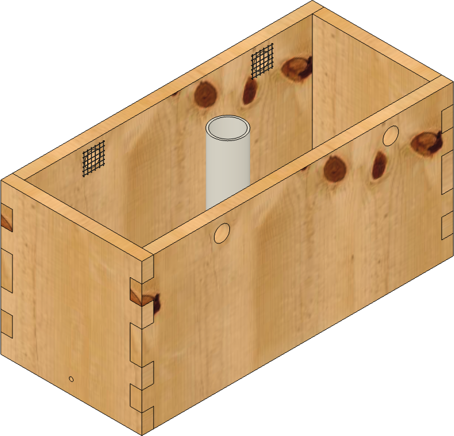
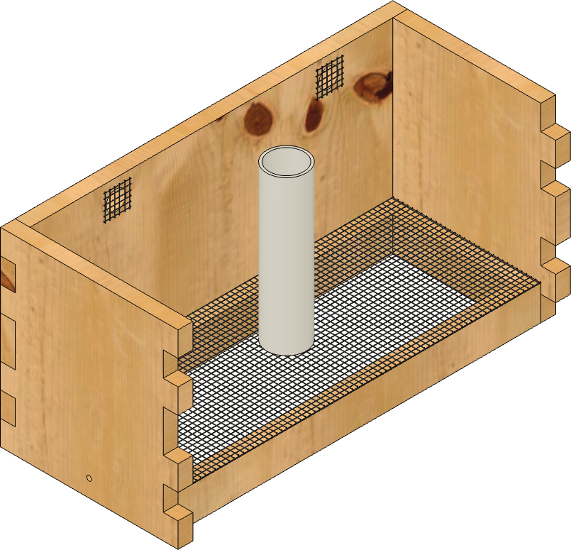
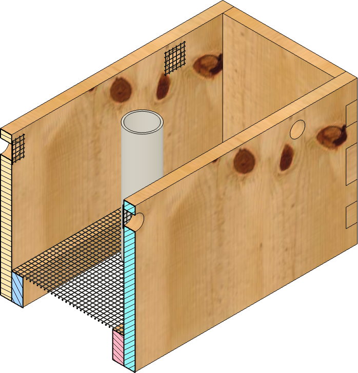

Overview
|
 Pic 1 - Quilt Box with Tube Installed  Pic 2 - Right Side Removed Showing Inside  Pic 3 - Sectional Analysis |
A quilt box can be used in the winter time to provide insulation for the colony, and to absorb humidity generated by the colony as it tries to stay warm.
Inspection Note
When you check on your hives during the cold periods, you will probably notice that the wood chips are a bit moist, as is the rag stuffed into the observation tube. This is the humidity generated by the bees’ breath, especially those bees which are working to keep the hive warm.
Usage Notes
Observation Tube
It is a good idea to put a tube of some sort in the box. 2” - 3” PVC works well. As shown in the pictures to the right, put it vertically in the center of the box, resting on the screening at the bottom. Then fill the box around the tube with cedar or pine shavings. Finally, stuff a rag into the tube.
This approach makes it easy to inspect the hive in the cold temperatures to see the colony's food status. You can remove the telescopic cover, pull the rag out of the tube, and shine a flashlight into the hive to check on it without having to break any of the seals.
If everything is good, put the rag back in the tube and seal the hive back up.
If the colony needs food, quickly lift the quilt box up at an angle, insert the food, and put it back into place. Keep the time the hive is open to the very minimum.
Where the Quilt Box is Added to the Hive
The quilt box is installed atop the brood boxes, and below the telescoping cover.
Upper Hive Entrance
This design has a hole at the bottom of the quilt box which offers an upper entrance for the bees. There are two schools of thought on the upper entrance.
|
|
Plug the Upper Entrance |
The expressed opinion for plugging it is that having openings at the top and bottom of the hive creates a chimney effect which causes the colony to loose heat. That said, there has been at least one study which showed that the temperature loss for leaving it open did not cause a meaningful heat loss for the colony. |
|
|
Keep the Upper Entrance Open |
Having an unobstructed upper entrance allows the bees to leave the hive for cleansing flights, even if the main entrance is not usable (for example, if the landing board is covered with snow). |
Space for Feeding the Colony
As shown in picture 3, there is space below the screening which is above the frames (similar to a shim). This allows the beekeeper to put food (e.g., winter patties) atop the frames for feeding the colony.
Notes on Making One
- This is best made from a deep box. Beekeepers in Ohio have expressed that when they used one made from a medium box, there was no value seen. The one diagrammed to the right is a 5-frame NUC-style deep box.
- The frame at the bottom of the box is made from 1x2s (3/4” x 1 3/4”).
- The screening on the bottom of the box needs to be stout enough to hold the weight of the wood chips put in the opening (without sagging), and tight enough to not have the chips fall into the hive. Window screening atop 0.25" mesh works well. This should be attached securely to the frame with staples.
- An entrance for the bees should be added. It is a 1/2” hole, and is shown in pictures 1 & 2 at the bottom front. Only one is needed.
- The holes on the top of the two sides are for ventilation. They should be around 1” holes, and need to be covered with screening to prevent mice from making a nest in the box. There are two schools of thought on the vertical placement these:
- One theory is that they need to be below the bottom of the telescoping cover. The expressed idea is that this allows for better ventilation.
- I prefer to put them closer to the top. This allows the telescoping cover to help prevent blowing rain from getting into this box.